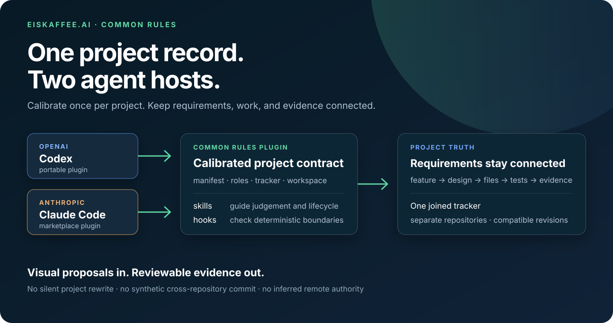
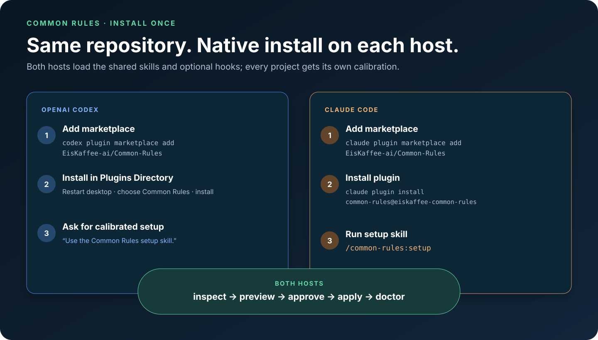
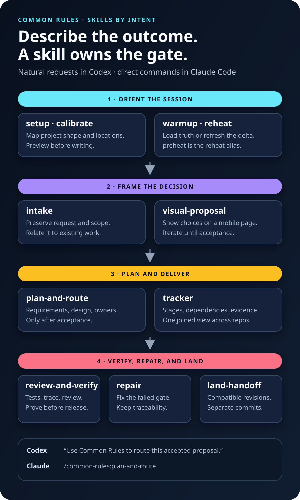
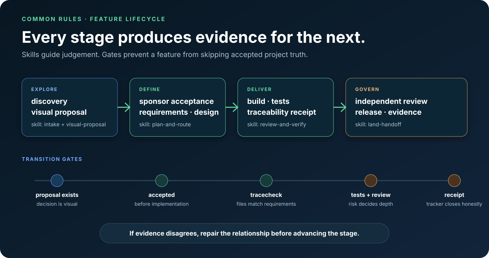
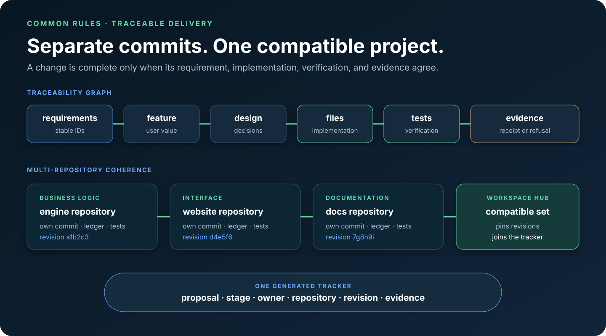

Common Rules 1.8.0 · visual review
One workflow, from calibration to evidence.
This is the current public concept for the Common Rules plugin. It replaces the former identity and shows how Codex and Claude Code use the same project truth.
The complete product model

Host setup and skill routing


Feature lifecycle
Every feature is user-deliverable and moves through visible decision, planning, build, verification, release, and evidence gates.

Multi-repository correctness
Repositories keep independent commits. The workspace tracker records the compatible revisions and traceability proves which requirements, files, tests, and documents must move together.

Review status
Proposal 02 is accepted and implementation evidence is being prepared for the 1.8.0 release. The generated tracker above is the authoritative status view.